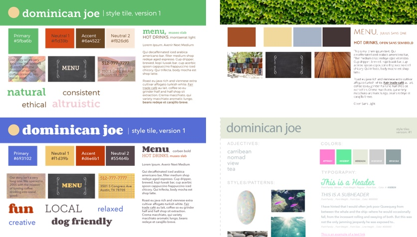
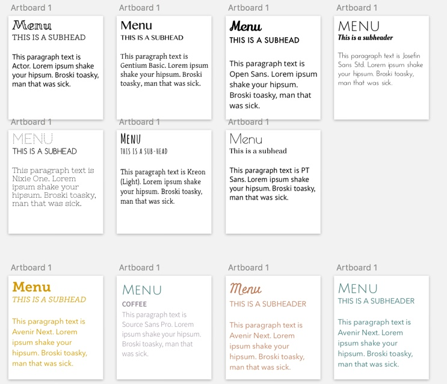
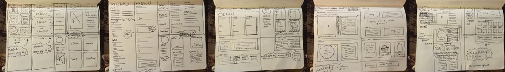
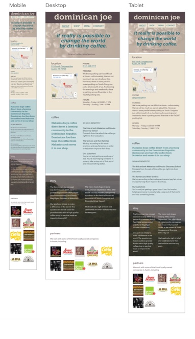

Why this project?
This was my second weekend assignment for the Iron Yard's UI design track. Each person drew the name of a local restaurant from a hat. During the research phase, I found that there were several opportunities on the website to use design solutions to increase online coffee orders, provide more organized and accurate information about things like hours and menu items, increase the site’s Google searchability (driving more customers), and visually improve Dominican Joe’s online brand.
The Finished Product!

Skills and Tools Used
Research
I started by conducting a SWOT analysis of the business, in order to find characteristics to keep in mind while I design. Then, I took some of those characteristics and created a word list, in order to expand and deep dive into these concepts.
Design
I took a few samples of the words from this list and created Style Tiles, to nail down the right typographies and textures for this design.
 I also chose to pare down the number of pages because a simple local business site shouldn't have eight pages full of words. Once I knew what needed to be on each page, I was able to create sketches for where that content would go. I ended up designing a mobile and large screen size, since I knew that customers would be looking things up on the go, and from home.  I turned these sketches into mockups, and after a couple rounds of feedback, I started coding.
Coding
I used plain HTML and Sass for this site, without a framework. I initially turned in a project that was identical to my mockups, but in order to get this project portfolio ready, I used rapid prototyping to make a few tweaks to my original design, and got it to where it is now.
What I Learned
My challenge with this project was my time restraint. None of the designs really felt right, or worked perfectly with the brand, so I sort of just went with the best of what I had and circled back to it later. The first version is below. I was amazed with how quickly I did this project when I first did it, but I was also very happy to have the chance to circle back to it and get it right, having completed the course.
